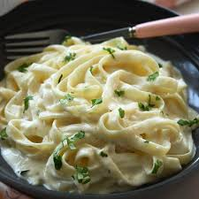

Alfredo Pasta
Home

Description
Alfredo pasta is a classic Italian-American dish renowned for its rich, creamy sauce. Traditionally, the sauce is made by emulsifying butter and Parmesan cheese with the hot pasta water, creating a smooth and luxurious coating for the fettuccine noodles. Over time, many variations have emerged, often incorporating heavy cream, garlic, and sometimes other cheeses to achieve a similar velvety texture and savory flavor. While simple in its core ingredients, the key to a successful Alfredo lies in the careful balance and emulsification of fats and liquids, resulting in a comforting and indulgent meal.
List Of Ingredients
- Fettuccine pasta: While other pasta shapes can be used, fettuccine is the classic choice due to its flat, wide surface that perfectly holds the creamy sauce.
- Butter: High-quality unsalted butter is crucial for the richness and emulsification of the sauce.
- Parmigiano-Reggiano cheese: Freshly grated Parmigiano-Reggiano (or Grana Padano) is essential for its nutty flavor and ability to melt smoothly into the sauce. Pre-grated cheeses often contain anti-caking agents that can hinder the desired creamy texture.
- Pasta cooking water: This starchy water is key to creating a smooth, emulsified sauce without the need for heavy cream.
- Salt: Used primarily for salting the pasta water, and then to taste for the finished dish.
- Black pepper (optional): A pinch of freshly cracked black pepper can add a subtle warmth and spice.
Steps To Follow
- Bring a large pot of generously salted water to a rolling boil. (It should taste like the sea.)
- Add the fettuccine and cook according to package directions until al dente (firm to the bite).
- Crucially, before draining, reserve at least 1 to 1.5 cups of the starchy pasta cooking water. This water is essential for creating the sauce. Drain the pasta and set aside.
- While the pasta is cooking, in a large skillet or pan over medium-low heat, melt the butter. If using garlic, add it now and sauté gently for 30-60 seconds until fragrant, being careful not to brown it.
- If using heavy cream: Stir in the heavy cream and let it warm through for about a minute. If adding nutmeg, do so now.
- Add the drained fettuccine directly to the skillet with the butter (and cream/garlic, if using).
- Immediately add about half of the grated Parmigiano-Reggiano cheese to the pasta.
- Crucial Step - Emulsify with Pasta Water: Begin adding the reserved hot pasta water, a ladleful at a time (start with about 1/2 cup), tossing vigorously with tongs or a pasta fork. The goal is to create a creamy, cohesive sauce. The starch in the water helps the butter and cheese emulsify.
- Continue adding cheese and pasta water alternately, tossing constantly, until the sauce is creamy, glossy, and coats the pasta beautifully. You may not need all the reserved water. The more you toss, the creamier it gets.
- Taste the pasta and season with additional salt if needed (remember the cheese is salty).
- Add freshly cracked black pepper to taste, if desired.
- Serve immediately, garnished with more freshly grated Parmigiano-Reggiano.